Farming simulator 2009
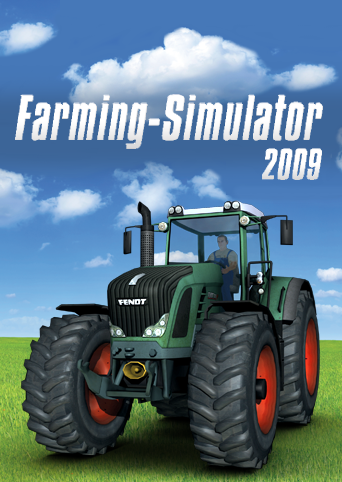 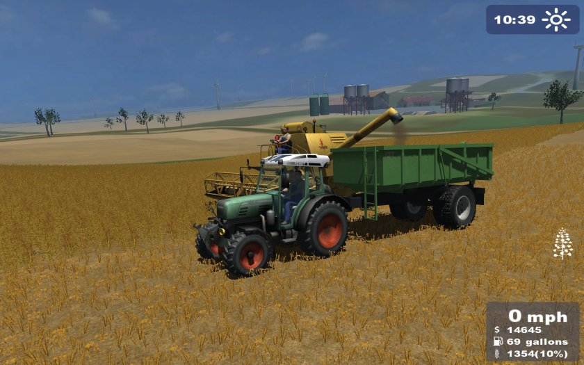Farming Simulator 2009 byla první hrou z celé série. Obsahovala méně strojů a bylo zde méně možností vydělávání peněz. Grafika byla limitována dobou (efekty a grafické detaily byli méně kvalitní oproti současnosti).
Farming simulator 2011
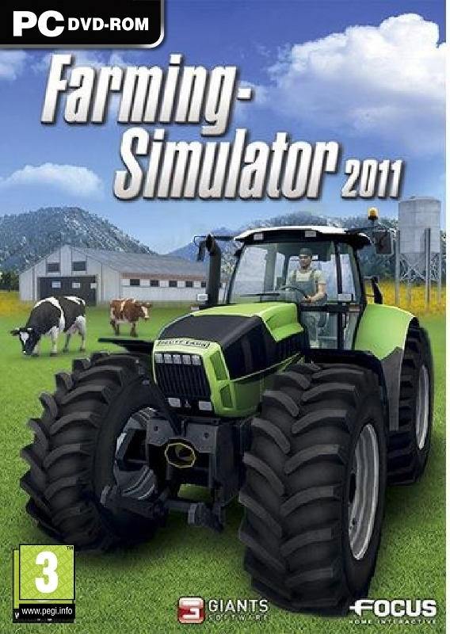 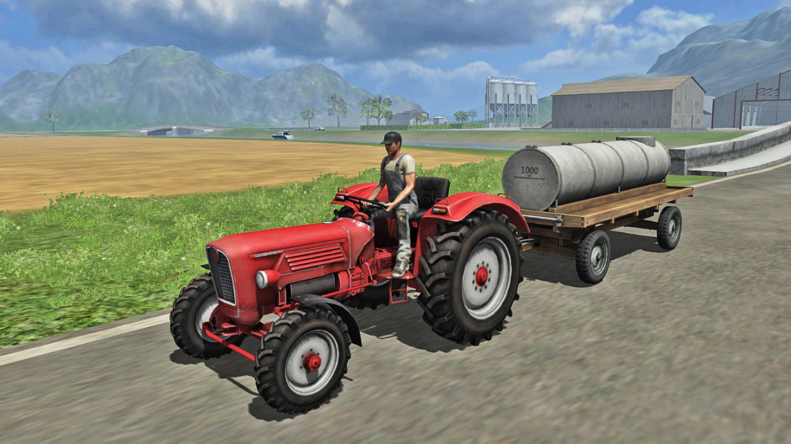Farming Simulator 2011 přinesl menší grafické zlepšení a více nových strojů.
Farming Simulator 2013
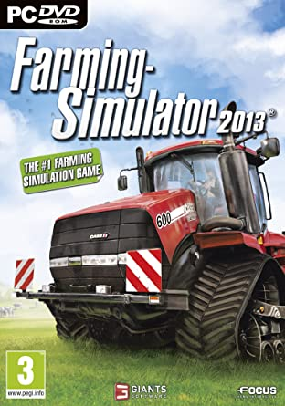 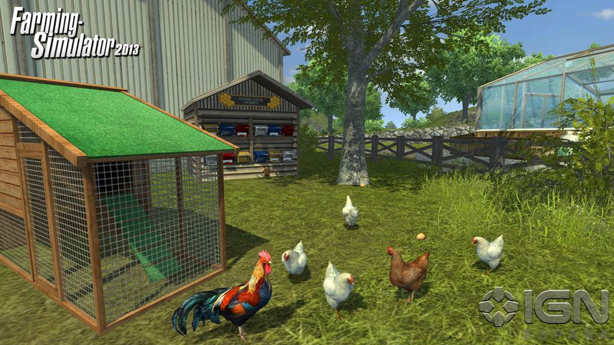Farming Simulator 2013 byl vydán roku 2012 a přinesl do hry rozšíření v podobě brambor.
Farming Simulator 15
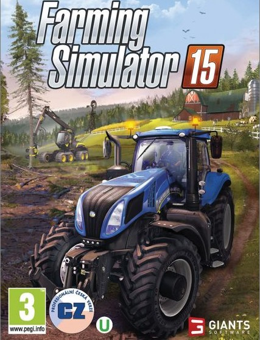 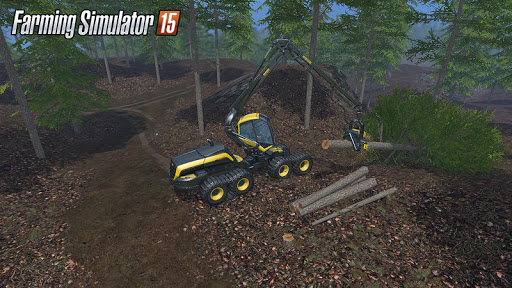Farming Simulator 2015 přinesl velkou změnu přidáním možnosti dřevařiny do hry. Mnoho hráčů se věnovalo jenom dřevu, jelikož dřevo jim vynášelo spoustu peněz během krátké chvíle. Dále to byl asi největší skok po grafické stránce od počátků hry.
Farming SImulator 2017
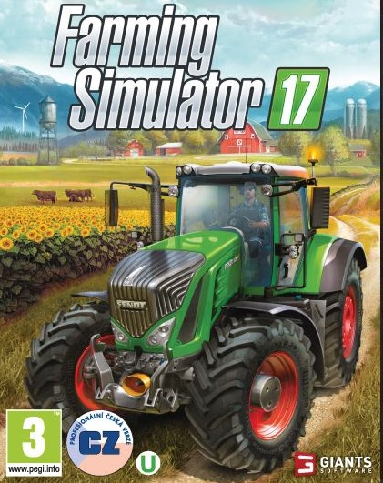 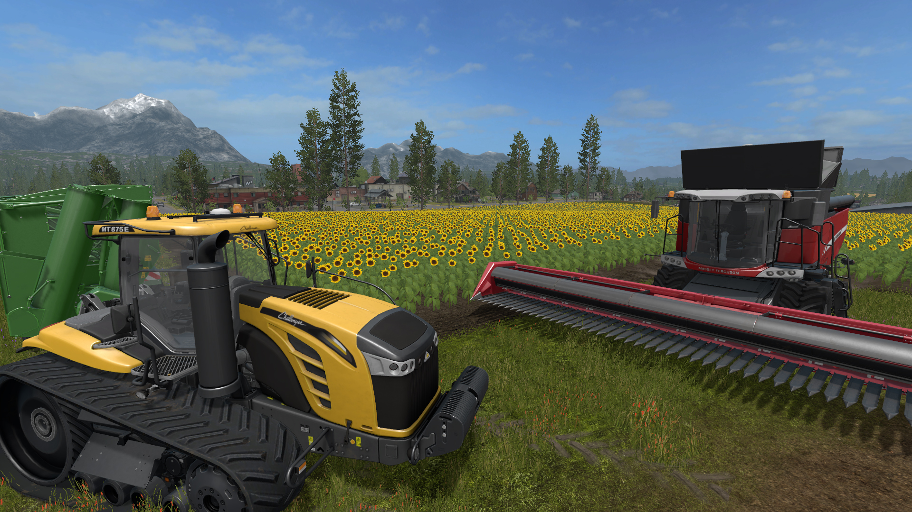Farming Simulator 2017 byl vydán roku 2016. Jednou z velkých změn oproti předešlému dílu je možnost konfigurace různých částí a vlastností strojů (výkon motoru, barva, kola). Byli přidány nové plodiny a zvířata jako sója, slunečnice a prasata.
Farming Simulator 2019
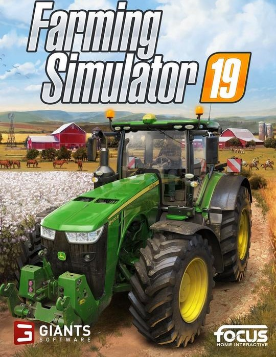 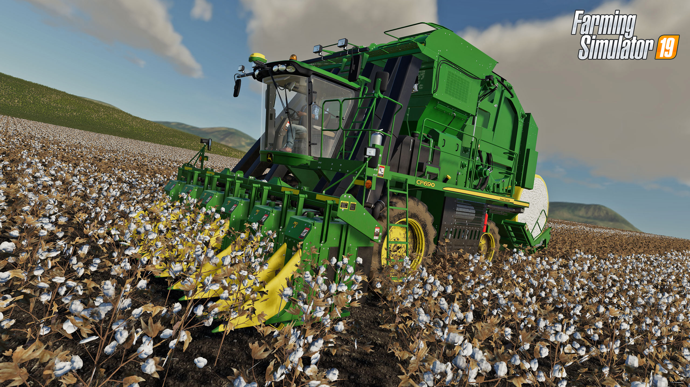Farming Simulator 19. Byla přidána bavlna, spousta strojů od světových značek. Hra se může pochlubit krásnou grafikou. Módovací komunita FS 19 patří mezi jednu z největších.
Farming Simulator 2022
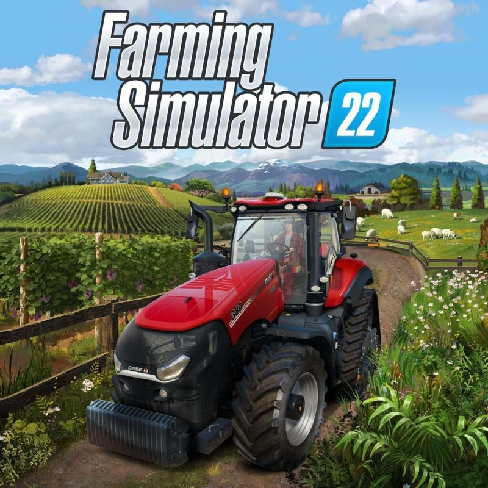 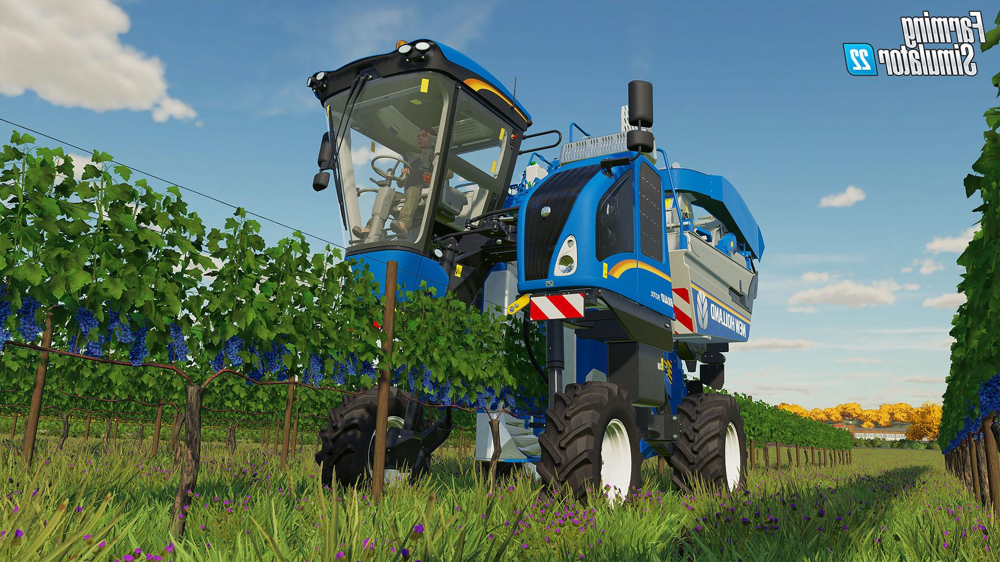Farming Simulator 22. Byly přidány hrozny, olivy a čirok. Byla přidána možnost manuálního řazení a vylepšené textury.